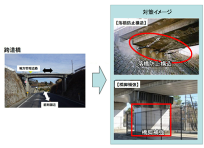
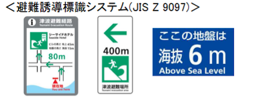

交通
このページでは交通で用いる道路・鉄道から現在されている地震対策や震災時の私たちがとるべき行動などを考察しまとめていく。
まず道路についてだ。災害時、救急救命活動や復旧支援活動を支えるための緊急輸送道路というものがある。緊急輸送道路は「災害直後から、避難・救助をはじめ、物資供給等の応急活動のために、緊急車両の通行を確保すべき重要な路線で、高速自動車国道や一般国道及びこれらを連絡する基幹的な道路。」[1]と定義されている。その緊急輸送道路は第1次から第3次まで区分されている。震災時、自動車でこの緊急輸送道路で移動している時は自動車を邪魔にならないように移動する必要がある。またこの緊急輸送道路の耐震補強について国土交通省は大規模な地震時でも軽微な損傷に留まり、速やかな機能回復が可能となる対策」を推進している。その中で速やかな機能回復が可能な性能を目指す対策や落橋・倒壊を防止する対策が挙げられる。橋脚や支承部の補強など様々な構造で補強されている。また高速道路や国土交通省直轄国道にある跨道橋は落橋防止構造や橋脚補強などで耐震補強されている。地方管理も含め令和4年時点で約400橋が完了している。

図1「耐震補強を行った跨道橋」
また地震発生時の防災機能を強化されている。東日本大震災の教訓を踏まえ、津波が想定される地域において自治体と協定を締結し、盛土部分等を一時的な避難場所として活用するため避難階段の設置や避難スペース等が整備されている。そして避難階段等の整備を進める、地域防災計画への位置づけや避難誘導標識システムの整備、地域住民の方々と利用訓練等の実施などがされている。全国の避難階段の設置個所は平成26年3月31日現在で合計160か所を超えている。このことから普段使っている道の避難場所、避難経路などあらかじめ調べて知っている必要がある。地震の規模によっては使えなくなってしまうところも出てくると思われるので複数の箇所を知っておくとよいと考えられる。また利用訓練に参加することや、知人などと確認していくことも大切になってくる。

図2「避難誘導標識システム」
次は鉄道についてだ。鉄道は大規模地震発生から運転再開までに一般的な手順がある。([3]参照)地震発生後、速やかに列車を停止させ、指令や駅、列車が連絡を取り合う。その後に乗客の避難や施設の点検作業や復旧作業が始まる。こうした手順を踏まえて運転再開につながっている。この連絡を取り合うときに繋がりにくく、点検作業等に時間がかかったケースがある。こうした問題について災害時優先電話等を用いて対策を実施することになっている。この時に私たちはよく駅員や係員の誘導に冷静に従って行動することが大切だと考えられる。駅構内には電光掲示板など落下しやすいものなどがあり、日頃から気を付けることが大切だ。また多くの人が改札口に移動する際、押したり走ったりすることなく移動することも大切だ。
熊本地震の時をもとに被災状況を確認する。[4]熊本地震ではホームの地割れ、石積みの一部崩壊などがあった。また液状化現象が発生した、架線のカテナリーハンガーの外れなどがあった。しかし2日後には本線が日・祝日ダイヤで運転再開し、8日後には全線で運転が再開された。このことから鉄道は一部の区間から運転再開が始まり、やがて全線復旧することが分かる。また復旧スピードも速いことが分かる。この復旧の速さは建設会社などが優先的に復旧作業が実施されたためである。
こうしたことから鉄道の地震対策は多くの人が協力し合って運転再開に至っていることが分かった。地震発生の際は冷静に駅員や係員の指示に従って行動することが求められる。
参考文献
[1]道路における震災対策 国土交通省 https://www.mlit.go.jp/road/bosai/measures/index1.html#1-1
[2]資料4 安全・安心の確保～道路の防災・震災対策～ 国土交通省 https://www.mlit.go.jp/common/001086282.pdf
[3]大規模地震発生時における首都圏鉄道の 運転再開のあり方に関する協議会 国土交通省 https://www.mlit.go.jp/common/000209953.pdf
[4]自然災害に対する事業継続への取組 国土交通省https://www.mlit.go.jp/unyuanzen/content/torikumi_jirei182.pdf